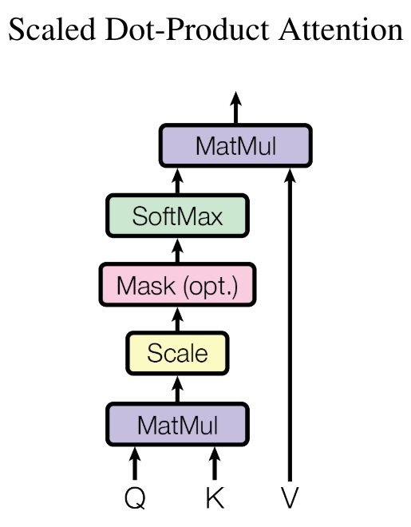
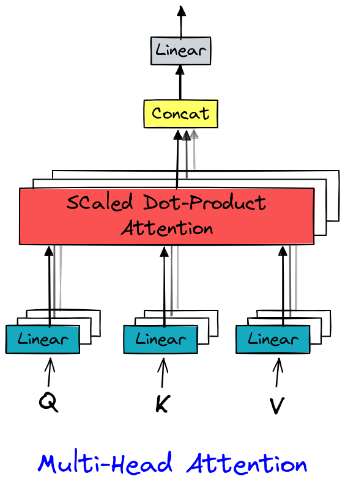

从零开始构建 GPT#
该笔记本解释了如何创建一个语言模型来预测下一个字符，基于 transformer 架构（更具体地说是解码器）。
为此，我们使用一个名为 moliere.txt 的文本文件，其中包含莫里哀戏剧中的所有对话。
该数据集是基于莫里哀的完整作品，这些作品可在 Gutenberg.org 上找到。我清理了数据，只保留了对话。
import torch
import torch.nn as nn
from torch.nn import functional as F
# Pour utiliser le GPU automatiquement si vous en avez un
device = 'cuda' if torch.cuda.is_available() else 'cpu'
数据集的阅读#
首先，我们打开并查看数据集的内容。
with open('moliere.txt', 'r', encoding='utf-8') as f:
text = f.read()
print("Nombre de caractères dans le dataset : ", len(text))
Nombre de caractères dans le dataset : 1687290
显示前 250 个字符：
print(text[:250])
VALÈRE.
Eh bien, Sabine, quel conseil me donnes-tu?
SABINE.
Vraiment, il y a bien des nouvelles. Mon oncle veut résolûment que ma
cousine épouse Villebrequin, et les affaires sont tellement avancées,
que je crois qu'ils eussent été mariés dès aujo
使用 set() 获取数据集中存在的唯一字符。
chars = sorted(list(set(text)))
vocab_size = len(chars)
print(''.join(chars))
print("Nombre de caractères différents : ", vocab_size)
!'(),-.:;?ABCDEFGHIJKLMNOPQRSTUVXYZabcdefghijlmnopqrstuvxyz«»ÇÈÉÊÏàâæçèéêëìîïòôùûŒœ
Nombre de caractères différents : 85
训练数据集的创建#
与课程 5 类似，我们将创建一个 mapping 来将字符转换为整数。这种 mapping 是一种非常简单的 tokenization 形式。
快速了解 tokenization#
什么是 tokenization？ tokenization 是将文本转换为整数序列的过程。每个整数可以表示一个字符、一组字符或一个词，具体取决于使用的方法。 词汇量与序列长度之间的平衡 一个好的 tokenizer 在词汇量（26 个用于字母表，约 100,000 个用于法语单词）和序列长度之间取得平衡。词汇量太小会增加序列的长度（例如，“Bonjour” 如果使用字符会变成 7 个 tokens，如果使用单词则是 1 个 token）。在实践中，极端情况是有问题的，我们寻求一个中间点。 流行的 tokenizers tokenizers 对语言模型的正常运行至关重要。它们的设计取决于方法和训练数据。其中最常用的是 Google 的 SentencePiece 和 OpenAI 的 tiktoken。
# Creation d'un mapping de caractère à entiers et inversement
stoi = { ch:i for i,ch in enumerate(chars) }
itos = { i:ch for i,ch in enumerate(chars) }
encode = lambda s: [stoi[c] for c in s] # encore : prend un string et output une liste d'entiers
decode = lambda l: ''.join([itos[i] for i in l]) # decode: prend une liste d'entiers et output un string
print(encode("Bonjour à tous"))
print(decode(encode("Bonjour à Tous")))
[13, 50, 49, 46, 50, 56, 53, 1, 68, 1, 55, 50, 56, 54]
Bonjour à Tous
我们将把数据集转换为整数序列，并以 PyTorch 张量的形式存储。
data = torch.tensor(encode(text), dtype=torch.long)
print(data[:250]) # Les 250 premiers caractères encodé
tensor([33, 12, 23, 64, 29, 16, 8, 0, 0, 16, 44, 1, 38, 45, 41, 49, 6, 1,
30, 37, 38, 45, 49, 41, 6, 1, 52, 56, 41, 47, 1, 39, 50, 49, 54, 41,
45, 47, 1, 48, 41, 1, 40, 50, 49, 49, 41, 54, 7, 55, 56, 11, 0, 0,
30, 12, 13, 20, 25, 16, 8, 0, 0, 33, 53, 37, 45, 48, 41, 49, 55, 6,
1, 45, 47, 1, 59, 1, 37, 1, 38, 45, 41, 49, 1, 40, 41, 54, 1, 49,
50, 56, 57, 41, 47, 47, 41, 54, 8, 1, 24, 50, 49, 1, 50, 49, 39, 47,
41, 1, 57, 41, 56, 55, 1, 53, 73, 54, 50, 47, 82, 48, 41, 49, 55, 1,
52, 56, 41, 1, 48, 37, 0, 39, 50, 56, 54, 45, 49, 41, 1, 73, 51, 50,
56, 54, 41, 1, 33, 45, 47, 47, 41, 38, 53, 41, 52, 56, 45, 49, 6, 1,
41, 55, 1, 47, 41, 54, 1, 37, 42, 42, 37, 45, 53, 41, 54, 1, 54, 50,
49, 55, 1, 55, 41, 47, 47, 41, 48, 41, 49, 55, 1, 37, 57, 37, 49, 39,
73, 41, 54, 6, 0, 52, 56, 41, 1, 46, 41, 1, 39, 53, 50, 45, 54, 1,
52, 56, 3, 45, 47, 54, 1, 41, 56, 54, 54, 41, 49, 55, 1, 73, 55, 73,
1, 48, 37, 53, 45, 73, 54, 1, 40, 72, 54, 1, 37, 56, 46, 50])
现在，我们将把文本分成训练和验证部分。我们采用 0.9-0.1 的比例。
n = int(0.9*len(data)) # 90% pour le train et 10% pour la validation
train_data = data[:n]
val_data = data[n:]
对于我们的语言模型，我们还将定义一个上下文的 block_size 大小。
block_size = 8
train_data[:block_size+1]
tensor([33, 12, 23, 64, 29, 16, 8, 0, 0])
在这里，前 8 个字符代表上下文，第 9 个字符是标签。这个简单的例子实际上包含了多种情况，因为我们的模型必须能够预测任何上下文中的下一个字符。因此，在这个列表中，我们有 8 个例子：
x = train_data[:block_size]
y = train_data[1:block_size+1]
for t in range(block_size):
context = x[:t+1]
target = y[t]
print(f"Quand l'entrée est {context.numpy()} le label est : {target}")
Quand l'entrée est [33] le label est : 12
Quand l'entrée est [33 12] le label est : 23
Quand l'entrée est [33 12 23] le label est : 64
Quand l'entrée est [33 12 23 64] le label est : 29
Quand l'entrée est [33 12 23 64 29] le label est : 16
Quand l'entrée est [33 12 23 64 29 16] le label est : 8
Quand l'entrée est [33 12 23 64 29 16 8] le label est : 0
Quand l'entrée est [33 12 23 64 29 16 8 0] le label est : 0
现在我们知道如何从一个例子中创建一组输入/标签。 让我们将这个方法适应 batch 处理：
batch_size = 4 # La taille de batch (les séquences calculés en parallèles)
block_size = 8 # La taille de contexte maximale pour une prédiction du modèle
def get_batch(split):
# On genere un batch de données (sur train ou val)
data = train_data if split == 'train' else val_data
#On génére batch_size indice de début de séquence pris au hasard dans le dataset
ix = torch.randint(len(data) - block_size, (batch_size,))
# On stocke dans notre tenseur torch
x = torch.stack([data[i:i+block_size] for i in ix])
y = torch.stack([data[i+1:i+block_size+1] for i in ix])
x, y = x.to(device), y.to(device) # On met les sur le GPU si on en a un
return x, y
xb, yb = get_batch('train')
print('Entrée : ')
print(xb.shape)
print(xb)
print('Labels :')
print(yb.shape)
print(yb)
Entrée :
torch.Size([4, 8])
tensor([[53, 69, 39, 41, 2, 0, 0, 27],
[53, 1, 56, 49, 1, 39, 84, 56],
[54, 11, 0, 0, 24, 12, 30, 14],
[ 1, 51, 72, 53, 41, 8, 0, 0]], device='cuda:0')
Labels :
torch.Size([4, 8])
tensor([[69, 39, 41, 2, 0, 0, 27, 19],
[ 1, 56, 49, 1, 39, 84, 56, 53],
[11, 0, 0, 24, 12, 30, 14, 12],
[51, 72, 53, 41, 8, 0, 0, 33]], device='cuda:0')
这些 4 个例子中，每个例子包含 8 个不同的例子（如前所述），总共 32 个例子。
二元模型#
在 NLP 的课程 5 中，我们学习了二元模型，这是最简单的语言模型。它根据一个上下文字符预测下一个字符。我们用 \(B\) 表示 batch 的大小，\(T\) 表示 block 的大小，\(C\) 表示词汇量。
为了测试其在 moliere.txt 数据集上的性能，让我们快速用 PyTorch 实现它：
class BigramLanguageModel(nn.Module):
def __init__(self, vocab_size):
super().__init__()
# Chaque token va directement lire la valeur du prochain à partir d'une look-up table entrainé
self.token_embedding_table = nn.Embedding(vocab_size, vocab_size)
def forward(self, idx, targets=None):
# Taille (B,T)
logits = self.token_embedding_table(idx)
# Taille (B,T,C)
# Pour gérer le cas de la génération (pas de target)
if targets is None:
loss = None
else: # Cas de l'entraînement
B, T, C = logits.shape
logits = logits.view(B*T, C)
targets = targets.view(B*T)
loss = F.cross_entropy(logits, targets)
return logits, loss
def generate(self, idx, max_new_tokens):
# idx est de la taille (B,T) avec T le contexte actuel
for _ in range(max_new_tokens):
# Forward du modèle pour récuperer les prédictions
logits, _ = self(idx)
# On prend uniquement le dernier caractère
logits = logits[:, -1, :] # devient (B, C)
# On applique la softmax pour récuperer les probabilités
probs = F.softmax(logits, dim=-1) # (B, C)
# On sample avec torch.multinomial
idx_next = torch.multinomial(probs, num_samples=1) # devient (B, 1)
# On ajouter l'élément sample à la séquence actuelle
idx = torch.cat((idx, idx_next), dim=1) # (B, T+1)
return idx
m = BigramLanguageModel(vocab_size).to(device)
logits, loss = m(xb, yb)
print(logits.shape)
print(loss)
torch.Size([32, 85])
tensor(4.6802, device='cuda:0', grad_fn=<NllLossBackward0>)
模型已实现但未训练。如果我们这样测试它，我们会得到灾难性的结果：
base=torch.zeros((1, 1), dtype=torch.long).to(device) # Le premier élément est un 0 (token de retour à la ligne)
# On génère 100 éléments
print(decode(m.generate(idx = base , max_new_tokens=100)[0].tolist()))
CZjb!DzPGŒR?'hô.ù
cddhhf,séÇqmp.ÉMjôCùÊF:TAFYèL àP;zbVmëtuPipL.ôHtSEé,t:æéÉYÈìïë?VGYxoùyçnï'lpôHà!ô
这完全是随机的，因为模型是随机初始化的。 现在我们将训练模型：
optimizer = torch.optim.AdamW(m.parameters(), lr=1e-3)
batch_size = 32
steps=10000
for step in range(steps): # Nombre d'étape d'entraînement (élements traités = steps*batch_size)
# On récupère un batch de données aléatoires
xb, yb = get_batch('train')
# On calcule le loss
logits, loss = m(xb, yb)
optimizer.zero_grad(set_to_none=True)
# Retropropagation
loss.backward()
# Mise à jour des poids du modèle
optimizer.step()
print(loss.item())
/home/aquilae/anaconda3/envs/dev/lib/python3.11/site-packages/tqdm/auto.py:21: TqdmWarning: IProgress not found. Please update jupyter and ipywidgets. See https://ipywidgets.readthedocs.io/en/stable/user_install.html
from .autonotebook import tqdm as notebook_tqdm
2.2493152618408203
从我们训练好的模型中生成：
print(decode(m.generate(idx = torch.zeros((1, 1), dtype=torch.long).to(device), max_new_tokens=300)[0].tolist()))
ELASGOXûÏï!
ANDann donde se ns ntrar pous fa àTEn!.
TELITEL'enomouvûûKbeue
SGAvore oue mesontre
t de pou n qur quvabou qude dente je père e em'eni
La d'euhèmpon, j'es en paiqus de rau plenoilà jonont DARLysontausqus es ei voisangur s ve.
DO lar dire tré quseuqu'arme à ai? t pe ne ndome l pa,
我们注意到数据结构有所改善，某些单词看起来几乎正确。但结果仍然灾难性，因为二元模型是一个过于简单的模型。
自注意力#
现在我们将逐步介绍 self-attention 的概念，这是 transformers 架构的一个关键元素。
我们想做什么？#
让我们从一个简单的想法开始。我们有一个大小为 \((B,T,C)\) 的张量。我们希望每个元素 \(T\) 是当前元素和前面元素的平均值，而不考虑后面的元素。这是给予前面元素重要性以预测当前值的最简单方法（这是注意力机制背后的想法）。
在 Python 中，我们可以这样实现这个想法：
# Création de notre tenseur random
B,T,C = 4,4,2
x = torch.randn(B,T,C)
x.shape
torch.Size([4, 4, 2])
# Calcul de la moyenne des éléments précédents (incluant l'élément actuel) pour chaque valeur.
xbow = torch.zeros((B,T,C))
for b in range(B):
for t in range(T):
xprev = x[b,:t+1] # (t,C)
xbow[b,t] = torch.mean(xprev, 0)
print(x[0])
print(xbow[0])
tensor([[ 1.5023, -0.5911],
[ 1.0199, -0.2976],
[-1.7581, 0.0969],
[ 0.7444, -0.3360]])
tensor([[ 1.5023, -0.5911],
[ 1.2611, -0.4443],
[ 0.2547, -0.2639],
[ 0.3771, -0.2819]])
我们得到了想要的结果：每个元素对应于当前元素与前面元素的平均值。
然而，我们知道 for 循环对于计算是低效的。我们更希望使用矩阵操作来执行相同的操作。
矩阵乘法回顾#
矩阵乘法：\((3 \times 3)\) 矩阵乘以 \((3 \times 2)\) 矩阵 初始矩阵 设矩阵 \(A\) 的维度为 \((3 \times 3)\)： \(A = \begin{pmatrix} a_{11} & a_{12} & a_{13} \\ a_{21} & a_{22} & a_{23} \\ a_{31} & a_{32} & a_{33} \end{pmatrix}\) 矩阵 \(B\) 的维度为 \((3 \times 2)\)： \(B = \begin{pmatrix} b_{11} & b_{12} \\ b_{21} & b_{22} \\ b_{31} & b_{32} \end{pmatrix}\) 矩阵乘法 \(C = A \times B\) 产生一个维度为 \((3 \times 2)\) 的矩阵 \(C\)： \(C = \begin{pmatrix} c_{11} & c_{12} \\ c_{21} & c_{22} \\ c_{31} & c_{32} \end{pmatrix}\) 每个元素 \(c_{ij}\) 计算如下： \(c_{ij} = \sum_{k=1}^{3} a_{ik} \cdot b_{kj}\) 也就是说：
\(c_{11} = a_{11}b_{11} + a_{12}b_{21} + a_{13}b_{31}\)
\(c_{12} = a_{11}b_{12} + a_{12}b_{22} + a_{13}b_{32}\)
\(c_{21} = a_{21}b_{11} + a_{22}b_{21} + a_{23}b_{31}\)
\(c_{22} = a_{21}b_{12} + a_{22}b_{22} + a_{23}b_{32}\)
\(c_{31} = a_{31}b_{11} + a_{32}b_{21} + a_{33}b_{31}\)
\(c_{32} = a_{31}b_{12} + a_{32}b_{22} + a_{33}b_{32}\) 以下是 Python 示例，说明这一点：
a = torch.ones(3, 3)
b = torch.randint(0,10,(3,2)).float()
c = a @ b
print('a=')
print(a)
print('--')
print('b=')
print(b)
print('--')
print('c=')
print(c)
a=
tensor([[1., 1., 1.],
[1., 1., 1.],
[1., 1., 1.]])
--
b=
tensor([[7., 6.],
[5., 0.],
[1., 8.]])
--
c=
tensor([[13., 14.],
[13., 14.],
[13., 14.]])
自注意力的数学技巧#
现在魔法开始起作用。当我们使用下三角矩阵而不是 1 矩阵并重新计算时：
a = torch.tril(torch.ones(3, 3))
b = torch.randint(0,10,(3,2)).float()
c = a @ b
print('a=')
print(a)
print('--')
print('b=')
print(b)
print('--')
print('c=')
print(c)
a=
tensor([[1., 0., 0.],
[1., 1., 0.],
[1., 1., 1.]])
--
b=
tensor([[1., 2.],
[1., 4.],
[6., 6.]])
--
c=
tensor([[ 1., 2.],
[ 2., 6.],
[ 8., 12.]])
矩阵的每个值都是当前值和前面值的总和。这几乎就是我们想要的！然后只需按行进行归一化：
a = torch.tril(torch.ones(3, 3))
a = a / torch.sum(a, 1, keepdim=True)
b = torch.randint(0,10,(3,2)).float()
c = a @ b
print('a=')
print(a)
print('--')
print('b=')
print(b)
print('--')
print('c=')
print(c)
a=
tensor([[1.0000, 0.0000, 0.0000],
[0.5000, 0.5000, 0.0000],
[0.3333, 0.3333, 0.3333]])
--
b=
tensor([[1., 2.],
[8., 6.],
[9., 8.]])
--
c=
tensor([[1.0000, 2.0000],
[4.5000, 4.0000],
[6.0000, 5.3333]])
就是这样！我们用简单的矩阵乘法和值的归一化替换了我们的双重 for 循环。
现在我们将使用它来计算 xbow 并比较其值与我们用双重循环计算的值：
wei = torch.tril(torch.ones(T, T))
wei = wei / wei.sum(1, keepdim=True)
xbow2 = wei @ x # (B, T, T) @ (B, T, C) ----> (B, T, C) fonctionne grâce au broadcasting de pytorch
torch.allclose(xbow, xbow2) # Vérifie que tous les éléments sont identiques
True
我们可以使用 softmax 函数代替归一化。
tril = torch.tril(torch.ones(T, T))
wei = torch.zeros((T,T))
# On met toutes les valeurs égales à 0 à la valeur -inf
wei = wei.masked_fill(tril == 0, float('-inf'))
print(wei)
tensor([[0., -inf, -inf, -inf],
[0., 0., -inf, -inf],
[0., 0., 0., -inf],
[0., 0., 0., 0.]])
现在我们可以对矩阵应用 softmax 并 TADAAA：
wei = F.softmax(wei, dim=-1)
print(wei)
xbow3 = wei @ x
torch.allclose(xbow, xbow3)
tensor([[1.0000, 0.0000, 0.0000, 0.0000],
[0.5000, 0.5000, 0.0000, 0.0000],
[0.3333, 0.3333, 0.3333, 0.0000],
[0.2500, 0.2500, 0.2500, 0.2500]])
True
在实践中，带有 softmax 的版本用于 self-attention 层。
自注意力：transformer 的核心#
目前，矩阵 \(wei\) 的每行包含均匀的值，这没有提供关于前面信息重要性的任何实际信息。
这就是 self-attention 概念的作用所在。我们想要的是一个可以训练的矩阵 \(wei\)。 我们将从我们的值 \(x\) 中创建 3 个值： query : 我要寻找什么？ 这个值代表序列中每个位置试图在其他位置中寻找的内容。 key : 我包含什么？ 这个值代表序列中每个位置包含的信息，这些信息可能对其他位置有用。 value : 我的值是什么？ 这个值代表从序列中每个位置提取的实际信息，如果被认为是相关的。 为了提取 query、 key 和 value 的值，我们使用一个线性层，它将输入投影到 head_size 维度。
为了计算序列中前一个元素相对于当前元素的重要性，我们执行 query \(Q\) 和 key \(K\)（转置）之间的点积： \(wei = QK^T\) 为了获得注意力权重（总和为 1），我们应用 softmax 并乘以 value \(V\)： \(Output = \text{softmax}\left(wei\right) \cdot V\)  在 Python 中，我们这样实现：
B,T,C = 4,8,32 # batch, time, channels
x = torch.randn(B,T,C)
head_size = 16 # Valeur de head_size (projection de x)
key = nn.Linear(C, head_size, bias=False)
query = nn.Linear(C, head_size, bias=False)
value = nn.Linear(C, head_size, bias=False)
k = key(x) # (B, T, 16)
q = query(x) # (B, T, 16)
wei = q @ k.transpose(-2, -1) # (B, T, 16) @ (B, 16, T) ---> (B, T, T)
tril = torch.tril(torch.ones(T, T))
wei = wei.masked_fill(tril == 0, float('-inf')) # Pour appliquer le softmax, il faut des valeurs -inf
wei = F.softmax(wei, dim=-1)
v = value(x)
out = wei @ v
out.shape
torch.Size([4, 8, 16])
因此，我们的矩阵 \(wei\) 现在是完全可训练的，并且可以使用该层来训练神经网络。
关于 self-attention 层的说明：
注意力是一种通信机制，可以被视为一个带有节点之间连接的图（在我们的例子中，末端节点连接到所有前面的节点）。
在注意力层中，没有关于元素相对于彼此的位置的概念。为了解决这个问题，我们需要添加一个 positionnal_embedding（请参阅课程后续部分）。
更准确地说，沿着 batch 维度没有交互： batch 中的每个元素都是独立处理的。这有点像我们有 batch_size 个独立的图。
这种注意力 block 被称为 decoder block。它的特点是每个元素只与过去（通过下三角矩阵）进行通信。然而，还有其他注意力层（encoder）允许所有元素之间相互通信（用于翻译、情感分析或图像处理）。
我们称之为 self-attention，因为 query、 key 和 value 来自同一源。 query、 key 和 value 可以来自不同的源：我们称之为 cross-attention。
如果您阅读论文 Attention is all you need，您会发现有一个对 head_size 平方根的归一化：
 这在初始化权重时特别有助于 softmax 函数的稳定性。
这在初始化权重时特别有助于 softmax 函数的稳定性。
现在让我们实现一个 head 类，它将执行 self-attention 的操作。这只是我们之前以类的形式看到的内容。
class Head(nn.Module):
""" Couche de self-attention unique """
def __init__(self, head_size,n_embd,dropout=0.2):
super().__init__()
self.key = nn.Linear(n_embd, head_size, bias=False)
self.query = nn.Linear(n_embd, head_size, bias=False)
self.value = nn.Linear(n_embd, head_size, bias=False)
self.register_buffer('tril', torch.tril(torch.ones(block_size, block_size)))
# Ajout de dropout pour la regularization
self.dropout = nn.Dropout(dropout)
def forward(self, x):
B,T,C = x.shape
k = self.key(x) # (B,T,C)
q = self.query(x) # (B,T,C)
# Le * C**-0.5 correspond à la normalisation par la racine de head_size
wei = q @ k.transpose(-2,-1) * C**-0.5 # (B, T, C) @ (B, C, T) -> (B, T, T)
wei = wei.masked_fill(self.tril[:T, :T] == 0, float('-inf')) # (B, T, T)
wei = F.softmax(wei, dim=-1) # (B, T, T)
wei = self.dropout(wei)
v = self.value(x) # (B,T,C)
out = wei @ v # (B, T, T) @ (B, T, C) -> (B, T, C)
return out
多头注意力#
在论文 Attention is all you need 中，提出了 self-attention 的一个变体。这个变体称为 multi-head attention，它只是简单地在并行方式下有多个 self-attention 层。该层的目的是并行处理以使其在 GPU 上更快。 
实现相当简单，因为它只是多个 head 层。
class MultiHeadAttention(nn.Module):
""" Plusieurs couches de self attention en parallèle"""
def __init__(self, num_heads, head_size,n_embd,dropout):
super().__init__()
# Création de num_head couches head de taille head_size
self.heads = nn.ModuleList([Head(head_size) for _ in range(num_heads)])
# Couche pour Linear (voir schema) après concatenation
self.proj = nn.Linear(n_embd, n_embd)
# Dropout si besoin
self.dropout = nn.Dropout(dropout)
def forward(self, x):
out = torch.cat([h(x) for h in self.heads], dim=-1)
out = self.dropout(self.proj(out))
return out
前馈层#
在论文 Attention is all you need 中，我们可以看到 transformer 的最后一个元素是 Feed Forward 层，它只是一个小型全连接网络。 我们用 Python 这样实现：
class FeedFoward(nn.Module):
def __init__(self, n_embd,dropout):
super().__init__()
self.net = nn.Sequential(
# 4*n_embd comme dans le papier
nn.Linear(n_embd, 4 * n_embd),
nn.ReLU(),
nn.Linear(4 * n_embd, n_embd),
nn.Dropout(dropout),
)
def forward(self, x):
return self.net(x)
Transformer 层#
现在我们有了所有元素来实现我们的 transformer 层，它将使用 multi-head attention 和 feed forward。在论文的主要图中，我们还注意到在 attention 和 feed forward 层的 input 和 output 之间有残差连接。这些连接有助于训练深度模型（有关详细信息，请参阅论文 Deep Residual Learning for Image Recognition）。因此，我们还将实现这些残差连接。对于 layer norm，我们在这里不会深入细节，但我们可以将其用途与 batch norm 层进行比较（有关详细信息，请参阅此 博客文章）。因此，我们只是使用 PyTorch 的 layer norm 实现。 以下是 Python 实现：
class TransformerBlock(nn.Module):
""" Block transformer"""
def __init__(self, n_embd, n_head):
super().__init__()
head_size = n_embd // n_head
self.sa = MultiHeadAttention(n_head, head_size)
self.ffwd = FeedFoward(n_embd)
self.ln1 = nn.LayerNorm(n_embd)
self.ln2 = nn.LayerNorm(n_embd)
def forward(self, x):
x = x + self.sa(self.ln1(x)) # x+ car c'est une connexion résiduelle
x = x + self.ffwd(self.ln2(x))
return x
说明：我们在层之前应用 layer norm（与论文相反）。这是自论文发表以来 transformer 中唯一被修改的部分，并且提高了性能。
为了更清晰，我们将在下一个笔记本中创建并优化我们的模型。